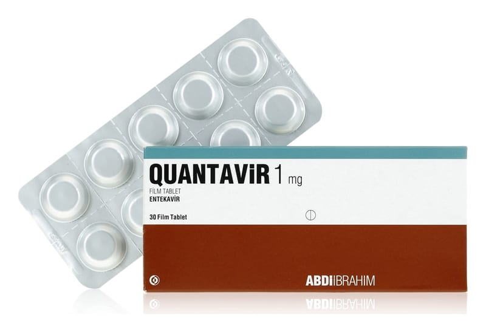

Quantavir 1 mg Film Kaplı Tablet, 30 Adet

Ne için kullanılır
KT · Bölüm 1QUANTAVİR antiviraller olarak adlandırılan bir ilaç grubuna dâhildir. QUANTAVİR, erişkinlerde hepatit B virüsü (HBV) enfeksiyonunun tedavisinde kullanılır. QUANTAVİR 1 mg film tabletlerin her biri etkin madde olarak 1 mg entekavir monohidrat içerir. QUANTAVİR 1 mg Film Tablet, açık pembe, üçgen, bikonveks film kaplı tabletlerdir. Her kutuda 30 veya 90 tablet vardır. QUANTAVİR, erişkinlerde hepatit B virüsü (HBV) enfeksiyonunun tedavisinde kullanılır. QUANTAVİR karaciğeri hasar görmüş fakat halen düzgün şekilde işlev gösteren (kompanse karaciğer hastalığı) kişilerde ve karaciğeri hasar görmüş ve düzgün şekilde işlev göstermeyen
(dekompanse karaciğer hastalığı) kişilerde kullanılabilir. Hepatit B virüsünün neden olduğu enfeksiyon, karaciğerinize zarar verebilir. QUANTAVİR vücudunuzdaki virüs miktarını azaltır ve karaciğerinizin durumunu iyileştirir. QUANTAVİR; vücut ağırlığı en az 32,6 kg olan 2 yaşından 18 yaşın altındaki çocuk ve ergenlerde kronik (uzun süreli) HBV enfeksiyonunun tedavisinde de kullanılır. QUANTAVİR, karaciğeri hasar görmesine rağmen hala düzgün bir şekilde işlev gören çocuklarda kullanılabilir (kompanse karaciğer hastalığı).